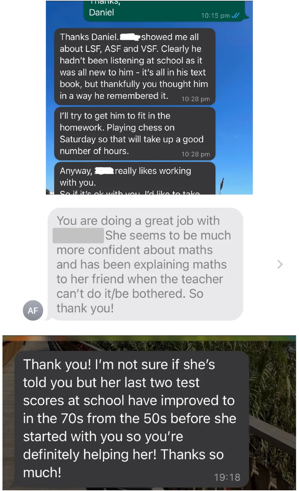
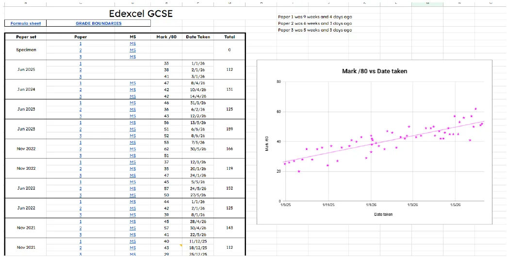
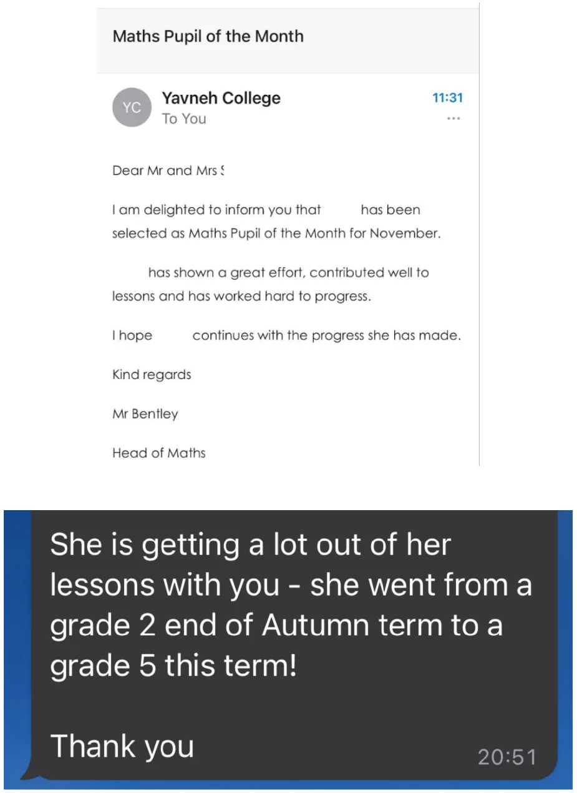
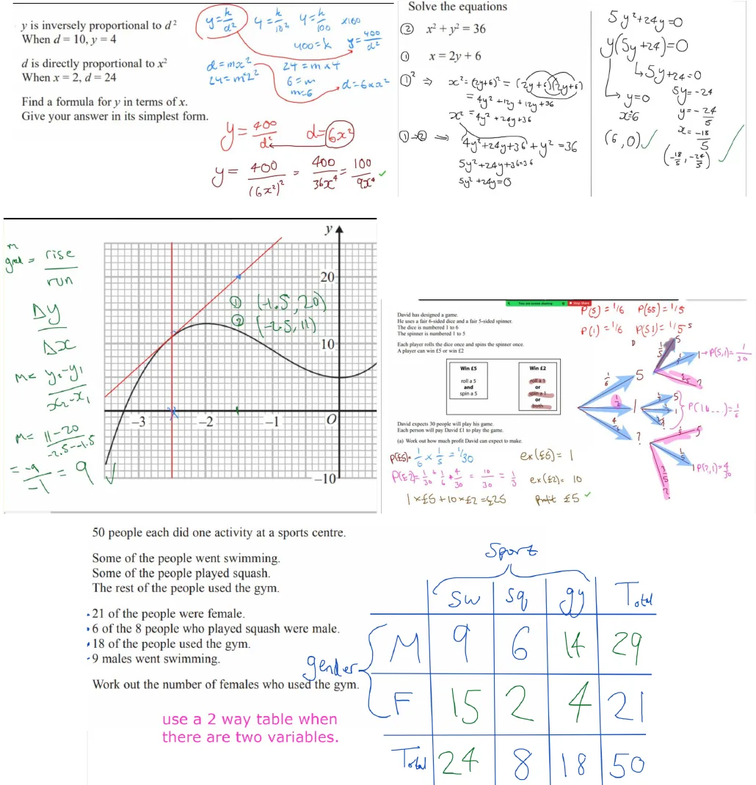

GCSE Maths tutor in Finchley, Barnet and online
GCSE Maths Support That Builds Confidence & Improves Results
Real parent feedback, genuine lesson examples and the system I use to help GCSE students make consistent progress.
Choosing the right tutor can be difficult. Rather than making big promises, I'd rather show you exactly how I work, what parents have said, and the systems I use to help GCSE students make steady, measurable progress.
- Over seven years tutoring GCSE Maths
- Mathematical Physics degree
- Enhanced DBS checked
Trust & credentials
A calm, organised way to support GCSE Maths.
I've been tutoring GCSE Maths for over seven years and have a degree in Mathematical Physics from the University of Nottingham.
Alongside tutoring, I'm a professional magician. Performing professionally has taught me how to hold people's attention, explain ideas clearly and adapt the way I communicate to different personalities. Those are exactly the same skills I use when teaching GCSE Maths.
Before becoming self employed, I worked as a Data and Cloud Engineer, where logical thinking and problem solving were part of my everyday work.
How GCSE Maths Support Works
A simple system designed to build confidence and improve results.
-
1
Initial Assessment
The first lesson is used to understand your child's current level, identify knowledge gaps and agree realistic goals.
-
2
Weekly 1:1 Lessons
Each lesson focuses on the areas that will make the biggest difference, whether that's understanding difficult topics, improving exam technique or preparing for upcoming tests.
-
3
Support Between Lessons
Students can message in our WhatsApp group if they get stuck on homework or revision, so they don't have to wait until the next lesson.
-
4
Structured Revision
Students receive access to a GCSE revision tracker with past papers, mark schemes and progress tracking.
-
5
Parent Visibility
Parents can clearly see what has been covered, how their child is progressing and what we'll be focusing on next.
-
6
Greater Confidence
Every part of the system is designed to make revision less overwhelming and help students make steady progress throughout the year.
What's included
The weekly lesson is only one part of the support.
Every student also receives the following throughout the year:
A focused 1:1 lesson built around current school work, tests, weak topics and target grades.
Support between lessons via WhatsApp when a student gets stuck.
A GCSE past paper tracker with direct links to papers, mark schemes and score tracking.
Online lessons can be rewatched for up to 6 months, making revision easier before tests.
Flexible online booking for extra sessions or rearrangements.
Parents always know how things are going, without needing to guess whether lessons are making a difference.
Parent feedback
A genuine look at how families describe the support.
Book a lessonDaniel is excellent. He has a 'let's just get it done approach'. He makes the lessons interesting using imaginative examples and might throw in some magic along the way. I can not recommend him to you more highly.

Student progress
Progress is tracked over time so lessons can respond to the exact topics costing the student marks.


Online lessons
A genuine look at online lessons.
Parents are often surprised by how interactive online lessons are. Both the student and I write on the screen together, difficult questions are broken into manageable steps, and lessons feel much closer to sitting side by side than watching someone talk on Zoom.

About Daniel
Clear explanations, steady confidence and lessons that feel human.
My goal is simple: to help students build confidence, understand the "why" behind the maths, and leave each lesson feeling more capable than when they arrived.
I enjoy showing students how the maths they're learning at school connects to real careers in technology and beyond.
Enhanced DBS checked. Online and in person support available.
FAQs
Questions parents usually have before booking.
Where do you tutor?
Main locations include Finchley, Barnet, Mill Hill, Hampstead, Highgate, Edgware, Stanmore and North West London. I also teach online across the UK.
How does the first lesson work?
The first lesson is about understanding where the student is now, not jumping straight into teaching. We'll normally look through recent school work or a test, identify the biggest gaps, and make a plan for the weeks ahead.
Can students get help between lessons?
Students can message in our WhatsApp group if they get stuck on homework or revision, so they don't have to wait until the next lesson.
Does online tuition actually work?
Both the student and I write on the screen together, questions are broken into manageable steps, and lessons can be rewatched for up to 6 months.
The first lesson
Ready to get started?
If you'd like to see whether we're a good fit, the easiest next step is to book an initial lesson or a quick chat.